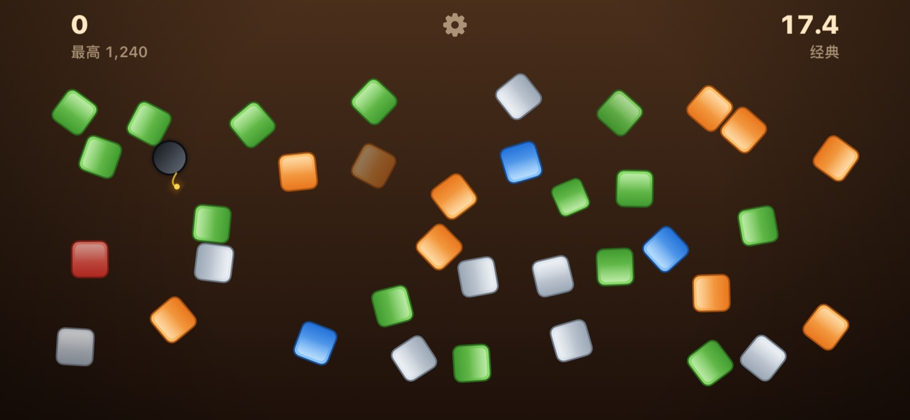
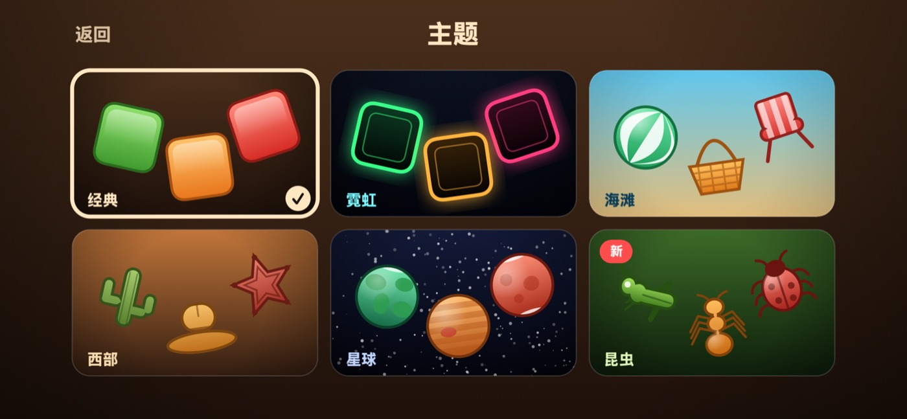
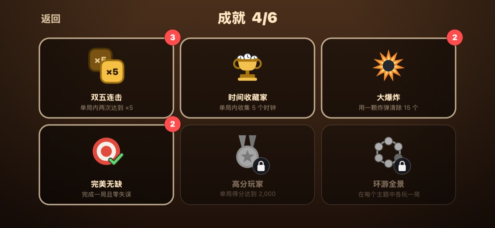

玩法
这款游戏的全部内容，一页说完。
一局
一局三十三秒。物件从屏幕各处涌入，点击即可击碎。

最关键的一条规则
连续命中会累积倍率：连中五次到 ×2，十二次到 ×3，二十五次到 ×4，五十次到 ×5。
只要失手一次，就直接跌回 ×1。没有击中任何东西的点击就算失手。所以点得更快并不等于更好——目标故意做得很小，真正有回报的是准确。
分值表
| 物件 | 分值 |
|---|---|
| 绿色 | 25 |
| 灰色 | 25 |
| 橙色 | 50 |
| 蓝色 | 100 |
| 红色 | 150 |
时钟与炸弹
时钟增加八秒。炸弹会清掉周围的一切——留到画面拥挤时再用，它是整局中单次得分最高的一手。
主题
共六种，可在首页的「主题」中选择：经典、霓虹、海滩、西部、星球、昆虫。每一种都有各自的物件、配色和音效。还没看过的主题会带上「新」标记。

成就
共六项，除一项外都可以反复获得，陈列柜会替你计数。
- 双五连击 — 单局内两次达到 ×5
- 时间收藏家 — 单局内收集五个时钟
- 大爆炸 — 用一颗炸弹清除十五个物件
- 完美无缺 — 零失误完成一局
- 高分玩家 — 单局得分达到 2,000
- 环游全景 — 在每个主题中各玩一局

在你的设备之间
最高分和成就通过 iCloud 同步，在 iPad 上拿到的成就也会出现在 iPhone 上。
一些有用的经验
- 先让物件攒起来再去追连击——画面空的时候失手很便宜，画面满了以后就很贵。
- 画面拥挤时的一颗炸弹，远胜过任何单个方块。
- 计时变红表示只剩五秒。那一刻时钟比红色方块更值钱。